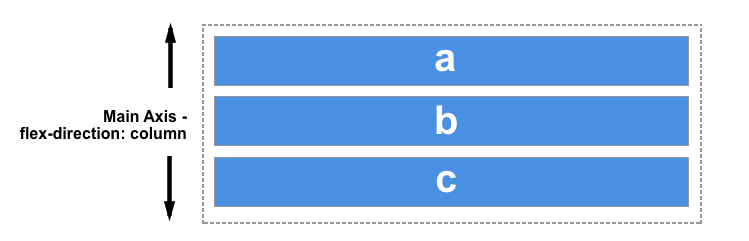

Flex Box
El Módulo de Caja Flexible, comúnmente llamado flexbox, fue diseñado como un modelo unidimensional de layout, y como un método que pueda ayudar a distribuir el espacio entre los ítems de una interfaz y mejorar las capacidades de alineación. (MDN contributors, 2021)
Cuando describimos a flexbox como unidimensional destacamos el hecho que flexbox maneja el layout en una sola dimensión a la vez — ya sea como fila o como columna. Esto contrasta con el modelo bidimensional del Grid Layout de CSS, el cual controla columnas y filas a la vez. (MDN contributors, 2021)
Los dos ejes de flexbox
Cuando trabajamos con flexbox necesitamos pensar en términos de dos ejes — el eje principal y el eje cruzado. El eje principal está definido por la propiedad flex-direction, y el eje cruzado es perpendicular a este. Todo lo que hacemos con flexbox está referido a estos dos ejes, por lo que vale la pena entender cómo trabajan desde el principio. (MDN contributors, 2021)
El eje principal
El eje principal está definido por flex-direction, que posee cuatro posibles valores:
- Row
- Row-reverse
- Column
- Column-reverse
Si elegimos row o row-reverse, el eje principal correrá a lo largo de la fila según la dirección de la línea . (MDN contributors, 2021)

Al elegir column o column-reverse el eje principal correrá desde el borde superior de la página hasta el final — según la dirección del bloque. (MDN contributors, 2021)
CSS grid
La creación de un sitio web con HTML puede llegar a ser muy rudimentario en la parte visual, sin embargo, con el uso de CSS y su metodología en cascada ayuda a complementar el despliegue de la información en la página, mejorando su formato o en otras palabras su diseño. También permite una mejor adaptación a las distintas plataformas de visualización, pero esto no siempre se ejecutaba con facilidad.
Hace un tiempo se trabajaba con los llamados floats, pero es una técnica compleja que daba lugar a muchos errores. Hoy los diseñadores cuentan con dos métodos para implementar un diseño dinámico: además de CSS grid, también se puede usar Flexbox. Sin embargo, las dos técnicas difieren en algunos aspectos.
Flexbox es unidimensional. Esto quiere decir que los elementos solo se pueden mover a lo largo de un eje. En cambio, un diseño CSS grid ofrece al diseñador web dos dimensiones para la colocación de los objetos porque, en lugar de solo un eje, permite crear una rejilla con filas y columnas.
Bibliografía
ionos. (12 de 03 de 2021). ionos. Obtenido de ionos: https://www.ionos.es/digitalguide/paginas-web/creacion-de-paginas-web/css-grid-layout/
MDN contributors. (10 de 03 de 2021). MDN Web Docs. Obtenido de MDN Web Docs: https://developer.mozilla.org/es/docs/Web/CSS/CSS_Flexible_Box_Layout/Basic_Concepts_of_Flexbox